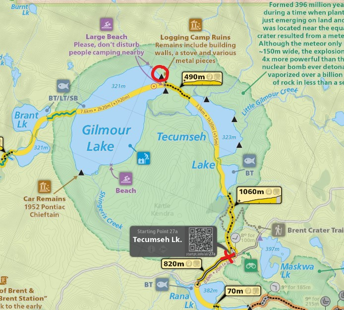 |
2025 September 29-30 - Gilmour Lake from Access Point 27a (Tecumseh Lake)
Day 1: Start to Gilmour Lake
Day 2: Return. Campsite circled in red.
4th annual Dad-Gordo trip, longest portage yet at 1.1km |
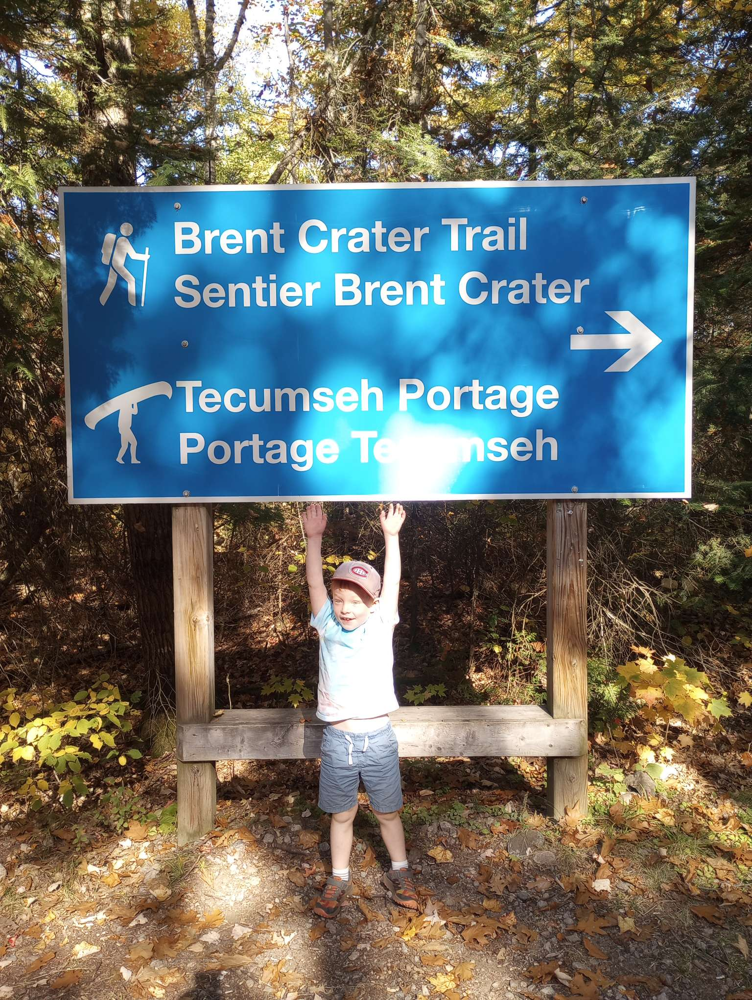 |
First trip we've both ever done where you start on the portage. 1.1km to Tecumseh lake, it was nothing to Gordon. |
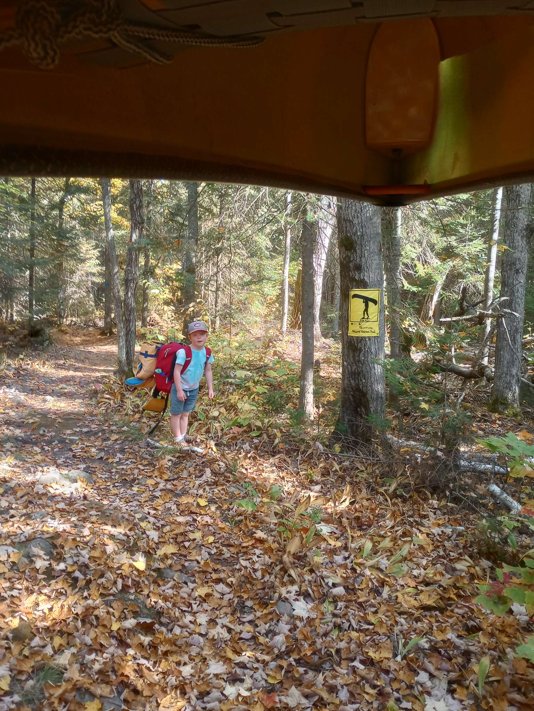 |
Gordo ready to go. |
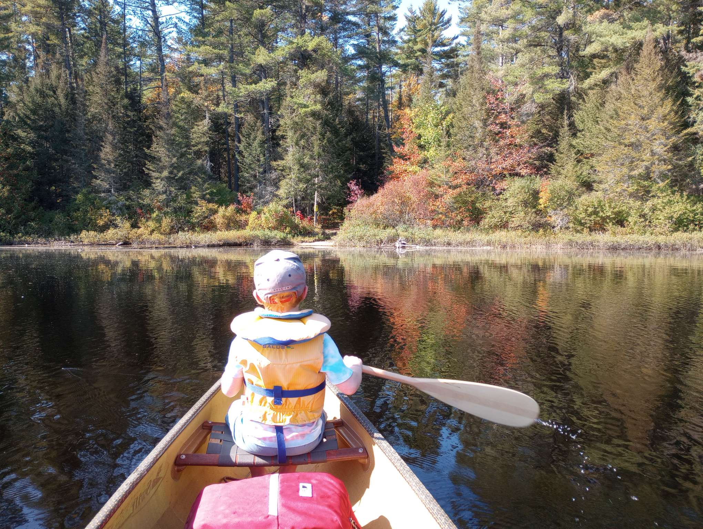 |
Paddling on Tecumseh Lake. Overall not a bad lake with one nice site. Had lunch at a small site. |
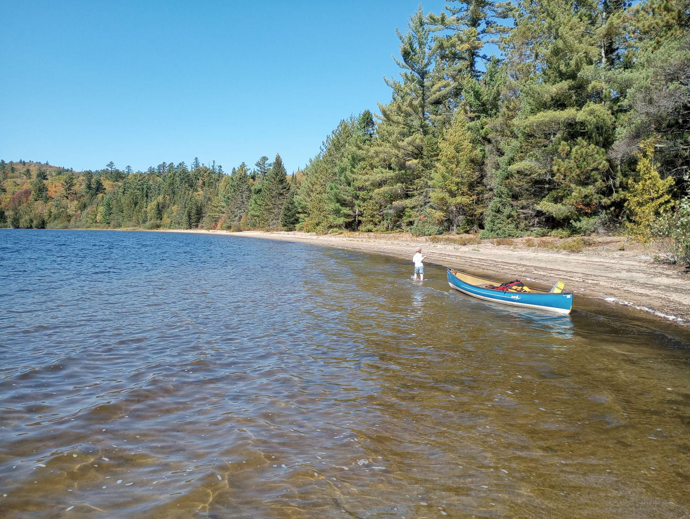 |
Our beach site on Gilmour is on the same stretch of beach as the end of the portage, so I had Gordon line the canoe up the beach. |
 |
Relaxing on the beach in the sun. He said the sand felt nice and warm. |
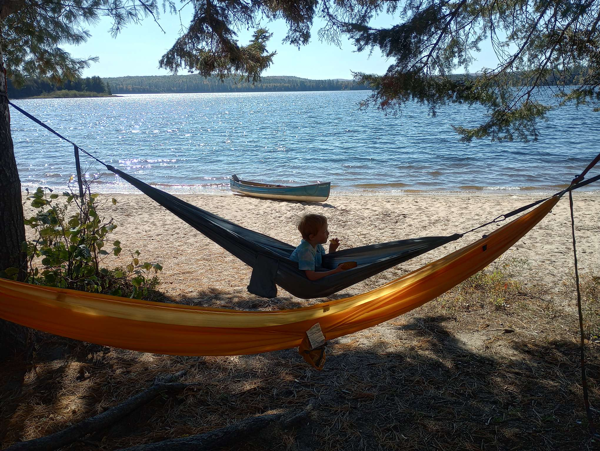 |
Hammock and chips is the tradition. |
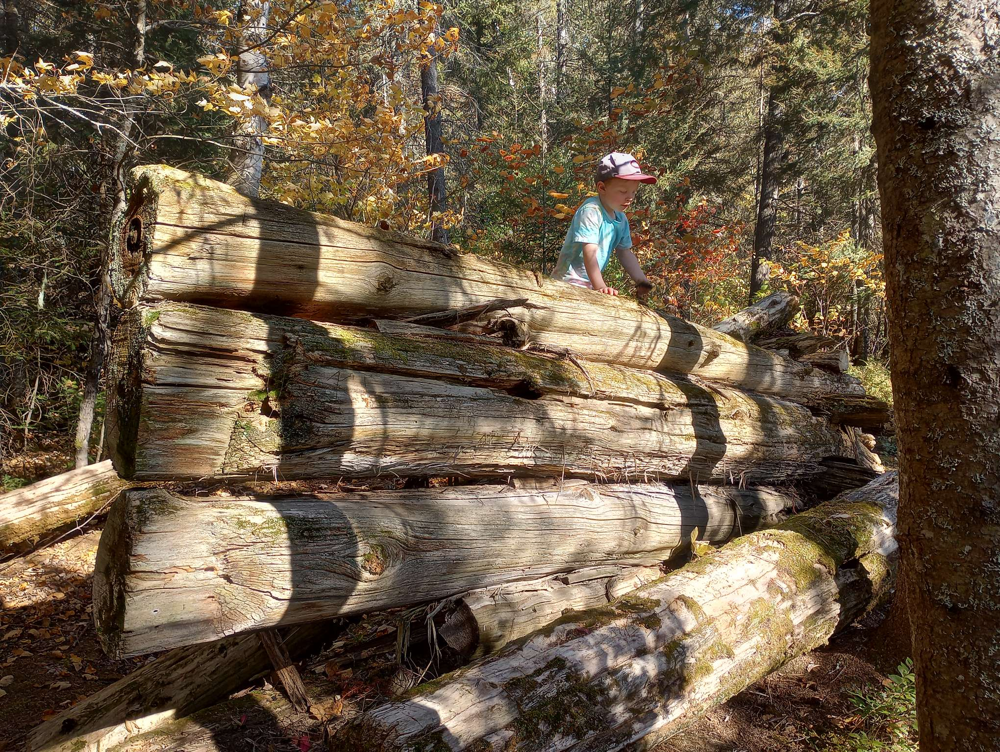 |
Exploring the old logging camp ruins that were around the site. |
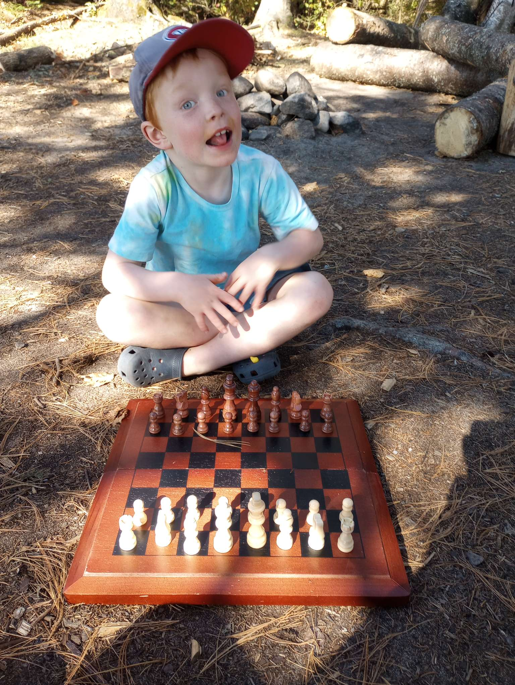 |
Someone stashed a chess set amongst the ruins so we played a quick game. |
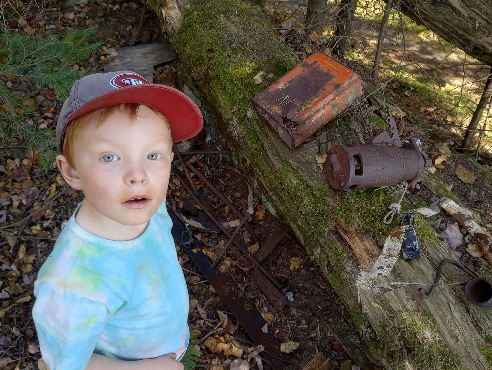 |
Old treasures. |
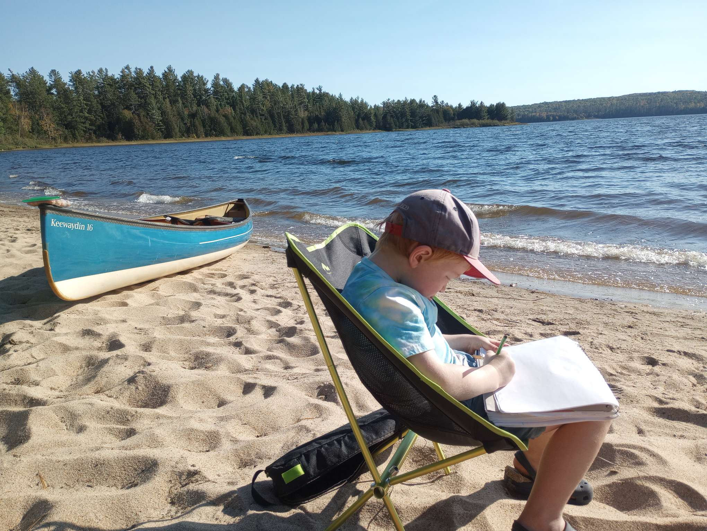 |
Drawing the scenery in the sun. |
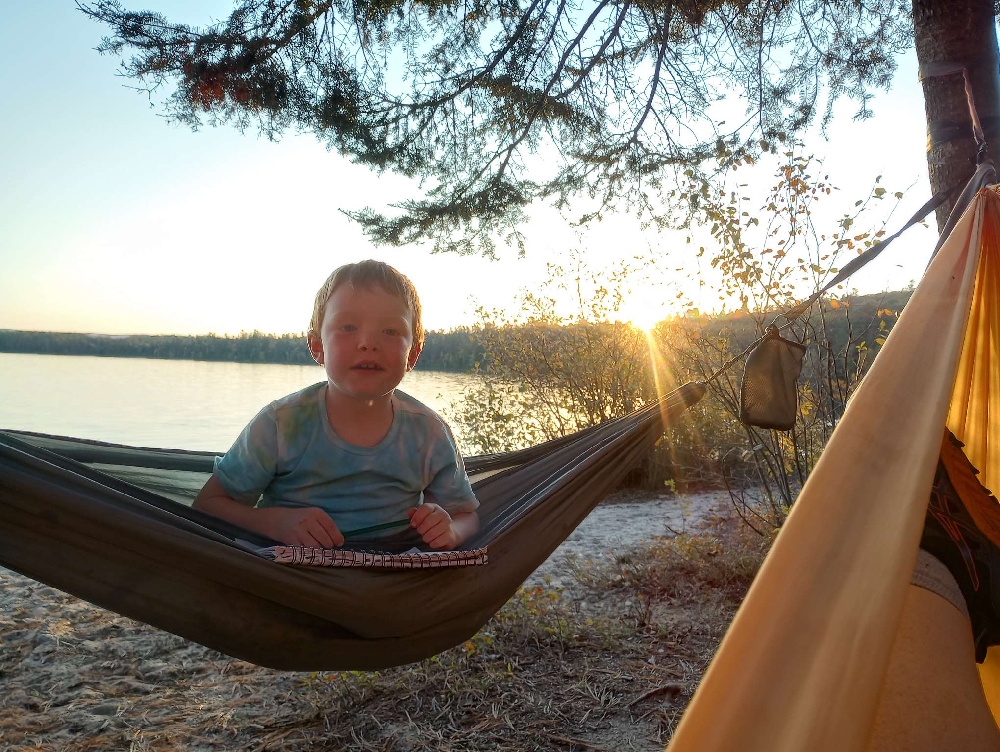 |
Nice sunset for the evening at the site, enjoying the hammock and the peace. |
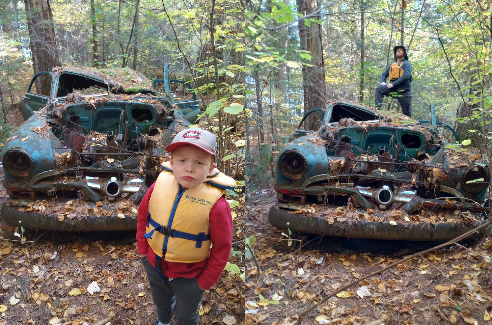 |
Across the lake is another site with an old car (1952 Pontiac Chieftain). Gordon thought it was scary. |
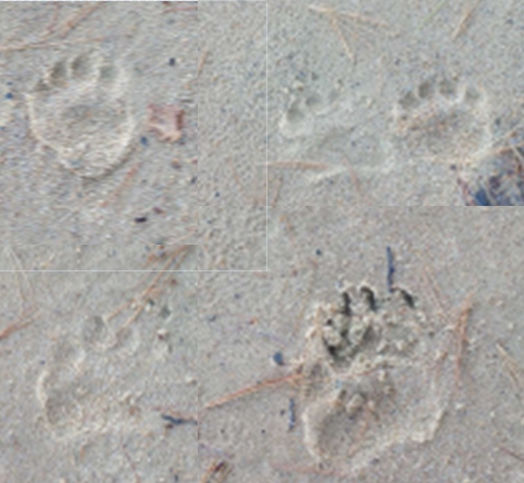 |
Bear paw prints on the beach near the old car. |
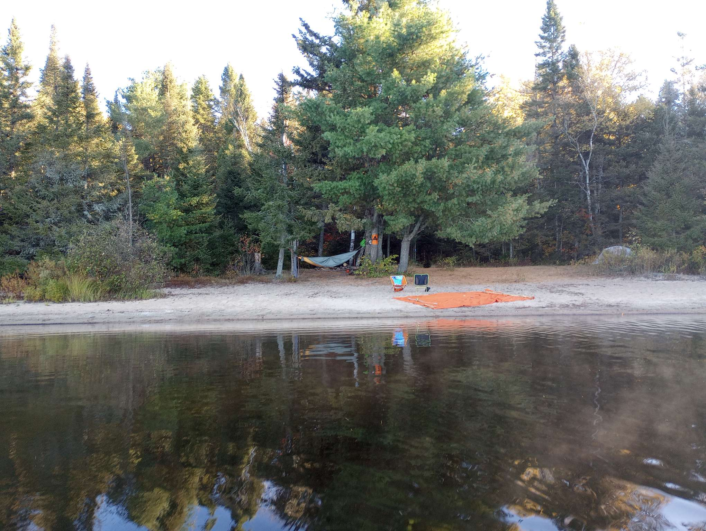 |
Looking back at our site from the lake. |
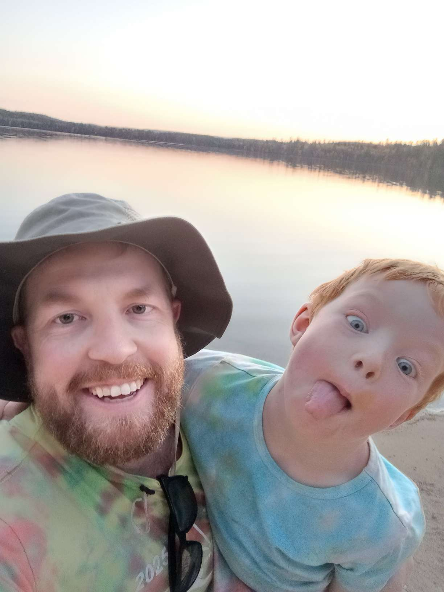 |
The usual pose from Gordon. He's 100% hooked on camping, I'll call my goal in that regard complete. |